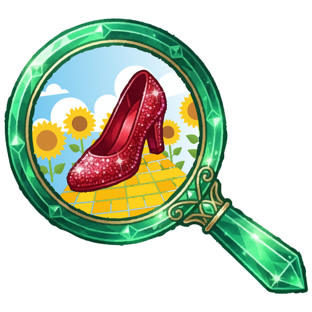

Our crystal ball appears cloudy...
No authors found for those exact filters.

Authors: Click here to submit your work.
No authors found for those exact filters.
For too long, the current literary LGBTQ+ market has been commodified, filtered through the lens of outsiders looking in, and reduced to fetishized tropes for mass consumption.
With all due respect, most of this tripe is a collosal misrepresentation of our lived experiences.
Project Never Settle is a definitive line drawn in the sand. We're reclaiming our space and now we're demanding to no longer remain an aesthetic, a trend, or a weekend fantasy drafted by authors who've never walked a single day in our shoes. The diversionary market has had its time at the microphone, prioritizing skewed prose over our genuine realities. So, now, we're taking the microphone back.
This database serves as a living index of undeniable truth. It's a curated, indexable launchpad for verified #OwnVoices and genuine LGBTQ+ authors who write about our lived experiences with the respect, grit, and authenticity they deserve. We champion the voices that aren't just writing about the community. They are the community.
Accept no substitutes. Demand authenticity. Never Settle.